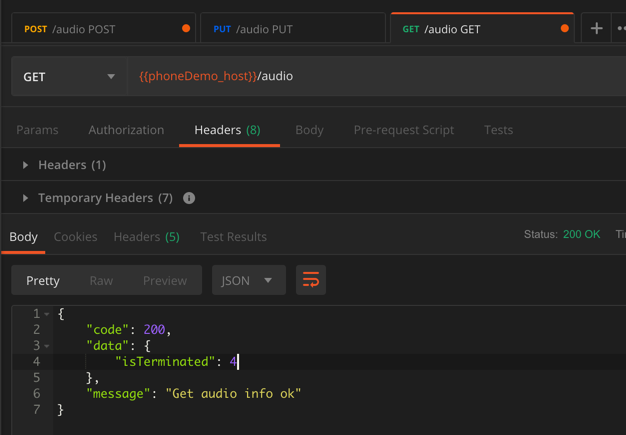
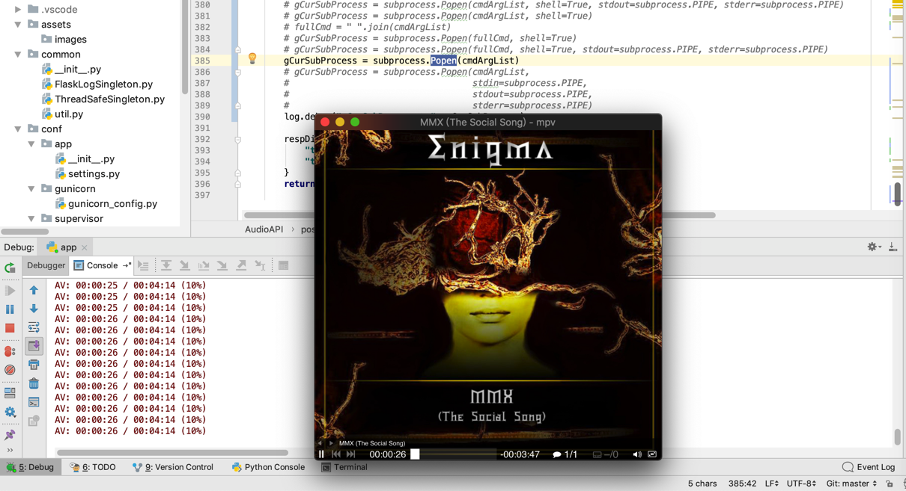
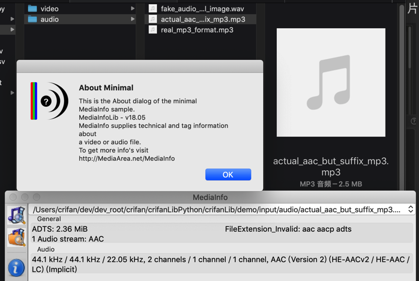
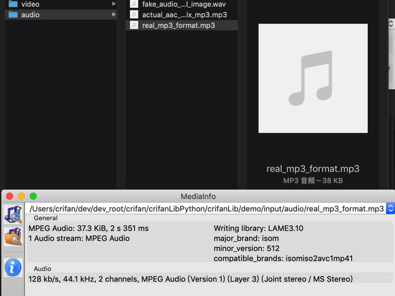
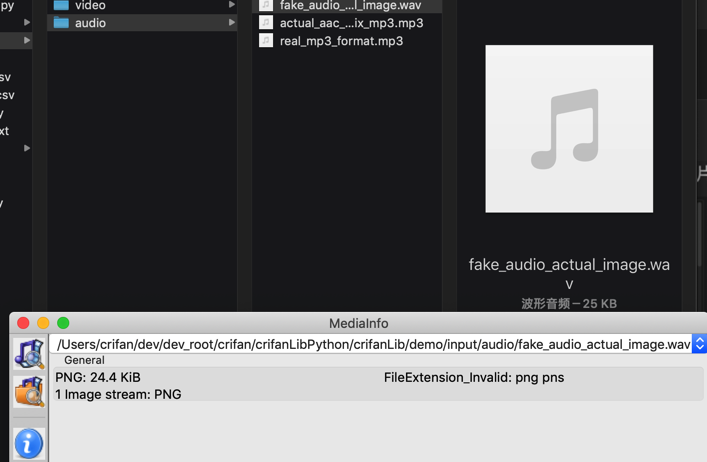

音频
播放音频
树莓派中用python播放音频
前提：
树莓派中，先去安装vlc：
sudo apt-get install vlc
代码：
import vlc
instance = vlc.Instance('--aout=alsa')
p = instance.media_player_new()
m = instance.media_new('/home/pi/Music/lizhongsheng_massif_live.mp3')
p.set_media(m)
p.play()
即可播放音频。
实现设置音量，暂停，继续播放等操作的代码是：
p.pause()
vlc.libvlc_audio_set_volume(p, 40)
p.play()
vlc.libvlc_audio_set_volume(p, 90)
Mac中调用mpv播放音频
播放音频：
cmdPlayer = "mpv"
cmdParaFilePath = tmpAudioFileFullPath
cmdArgList = [cmdPlayer, cmdParaFilePath]
if gCurSubProcess:
gCurSubProcess.terminate()
gCurSubProcess = subprocess.Popen(cmdArgList)
log.debug("gCurSubProcess=%s", gCurSubProcess)
停止播放：
if audioControl == "stop":
if gCurSubProcess:
gCurSubProcess.terminate()
respData = {
audioControl: "ok"
}
else:
respData = {
audioControl: "Unsupport command"
}
获取播放效果：
if gCurSubProcess:
isTerminated = gCurSubProcess.poll() # None
# stdout_data, stderr_data = gCurSubProcess.communicate()
# stdoutStr = str(stdout_data)
# stderrStr = str(stderr_data)
respData = {
"isTerminated": isTerminated,
# "stdout_data": stdoutStr,
# "stderr_data": stderrStr,
}
返回结果：
- 正在播放：返回isTerminated为
null - 被终止后，返回isTerminated为
4- 
播放的效果：
mac系统中播放音频
PyCharm的console中输出当前播放的信息 -》 如果是mac的terminal中，则是覆盖式的，不会这么多行 同时弹框GUI窗口

mp3
解析mp3等音频文件得到时长信息
用库：
- audioread
import audioread
try:
audioFullFilePath = "/your/input/audio/file.mp3"
with audioread.audio_open(audioFullFilePath) as audioFp:
audioInfo["duration"] = audioFp.duration
audioInfo["channels"] = audioFp.channels
audioInfo["sampleRate"] = audioFp.samplerate
except OSError as osErr:
logging.error("OSError when open %s error %s", audioFullFilePath, osErr)
except EOFError as eofErr:
logging.error("EOFError when open %s error %s", audioFullFilePath, eofErr)
except audioread.DecodeError as decodeErr:
logging.error("Decode audio %s error %s", audioFullFilePath, decodeErr)
后经整理成函数：
import audioread
def detectAudioMetaInfo(audioFullPath):
"""
detect audio meta info: duration, channels, sampleRate
"""
isOk = False
errMsg = ""
audioMetaInfo = {
"duration": 0,
"channels": 0,
"sampleRate": 0,
}
try:
with audioread.audio_open(audioFullPath) as audioFp:
audioMetaInfo["duration"] = audioFp.duration
audioMetaInfo["channels"] = audioFp.channels
audioMetaInfo["sampleRate"] = audioFp.samplerate
isOk = True
except OSError as osErr:
errMsg = "detect audio info error: %s" % str(osErr)
except EOFError as eofErr:
errMsg = "detect audio info error: %s" % str(eofErr)
except audioread.DecodeError as decodeErr:
errMsg = "detect audio info error: %s" % str(decodeErr)
if isOk:
return isOk, audioMetaInfo
else:
return isOk, errMsg
调用：
def demoDetectAudioMeta():
curPath = os.path.dirname(__file__)
inputAudioList = [
"input/audio/actual_aac_but_suffix_mp3.mp3",
"input/audio/real_mp3_format.mp3",
"not_exist_audio.wav",
"input/audio/fake_audio_actual_image.wav",
]
for eachAudioPath in inputAudioList:
eachAudioFullPath = os.path.join(curPath, eachAudioPath)
isOk, errOrInfo = detectAudioMetaInfo(eachAudioFullPath)
print("isOk=%s, errOrInfo=%s" % (isOk, errOrInfo))
if __name__ == "__main__":
demoDetectAudioMeta()
对应的音频文件，用MediaInfo检测出的信息：
- 正常mp3
- 
- 
- 异常mp3：
- 故意把png图片改成mp3
- 
- 故意把png图片改成mp3
输出：
# isOk=True, errOrInfo={'duration': 637.8, 'channels': 2, 'sampleRate': 44100}
# isOk=True, errOrInfo={'duration': 2.3510204081632655, 'channels': 2, 'sampleRate': 44100}
# isOk=False, errOrInfo=detect audio info error: [Errno 2] No such file or directory: '/Users/crifan/dev/dev_root/crifan/crifanLibPython/crifanLib/demo/not_exist_audio.wav'
# isOk=False, errOrInfo=detect audio info error: